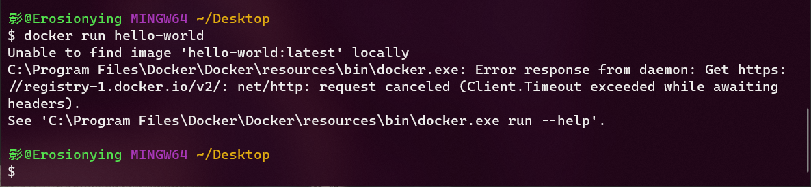
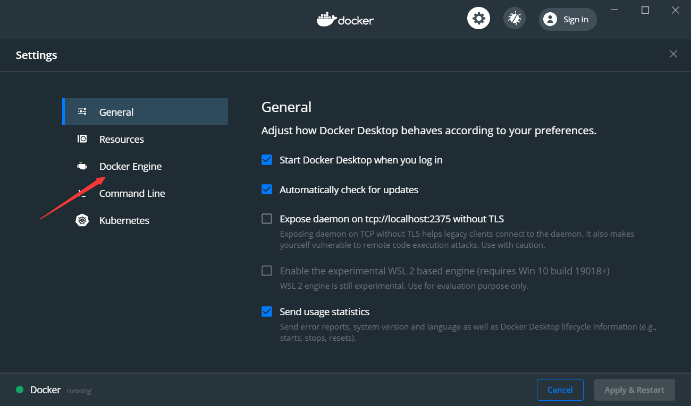
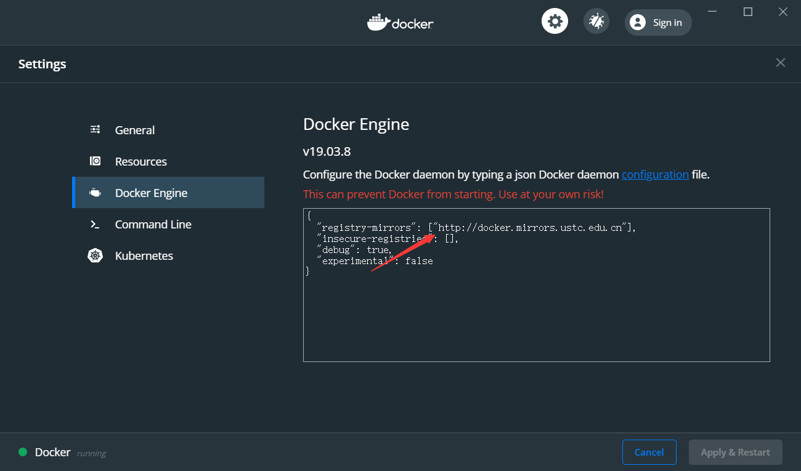
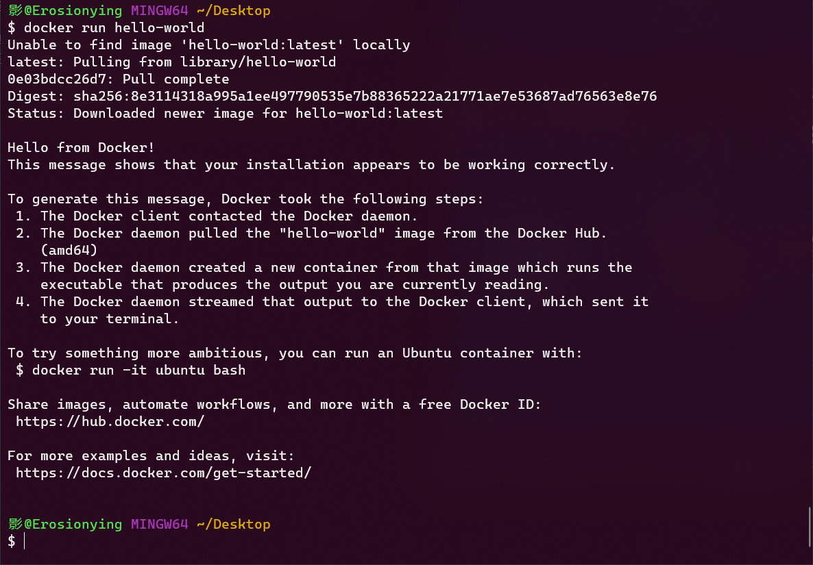
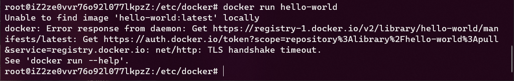
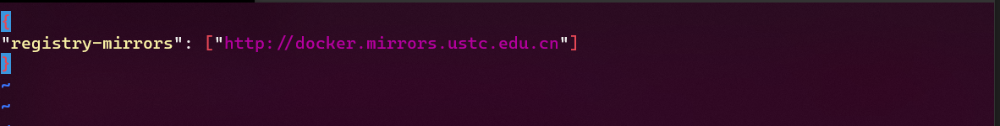
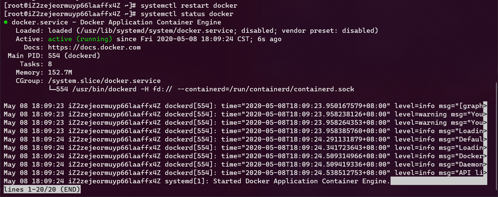
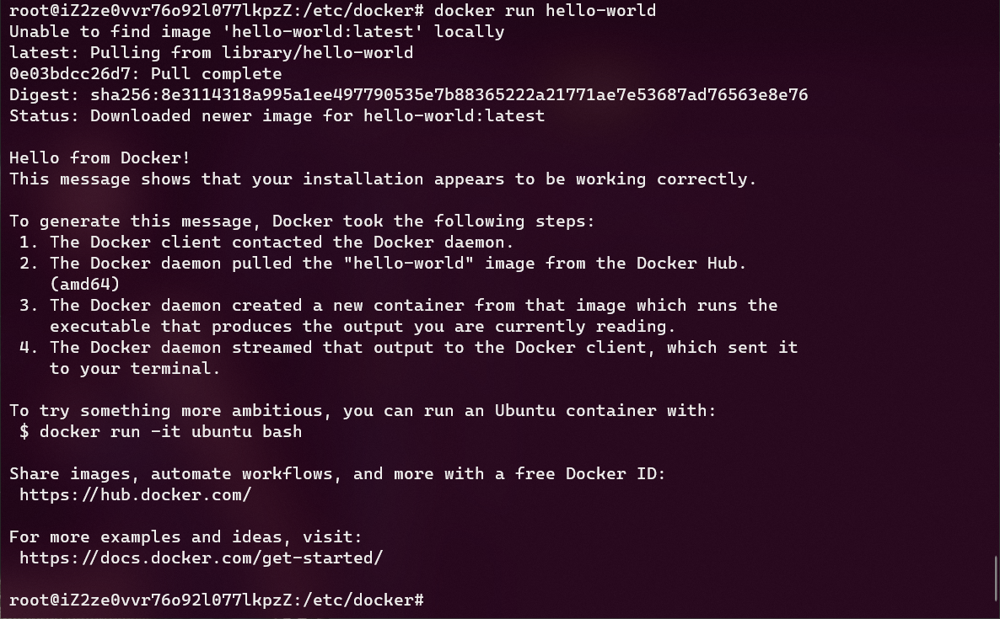

关于安装Docker之后，远端拉取镜像时出错的解决办法，原因是Docker官方源在国内访问非常慢。
网上的帖子好像转的都挺乱的(解决方式不一样)，我认为还是直接更改为国内源最好吧，所以我还是决定自己写一篇博客吧……
Unable to find image ‘hello-world:latest’ locally……(Windwos)
Windows 安装：https://docs.docker.com/docker-for-windows/install/
Linux 安装：https://docs.docker.com/engine/install/
安装/操作步骤官方文档介绍的非常清楚，这里就不介绍了
根据官方文档的指导安装完成docker之后，执行测试命令：docker run hello-world时，可能会出现以下错误：
Windows 10

右键点击右下角Docker图标会打开以下窗口：

点击Docker Engine菜单栏，跳转至以下页面，并将registry-mirrors的对应value修改为以下值：
1 | "http://docker.mirrors.ustc.edu.cn" |
(此处使用的是USTC源，您也可以使用其他源，如阿里源等……)

修改完毕后，点击界面右下角Apply & restart按钮，这将会应用更改内容并将Docker重启
打开命令行，重新执行命令
1 | docker run hello-world |
出现以下输入，表示本机已经成功拉取远端镜像

Unable to find image ‘hello-world:latest’ locally……(Linux)
执行docker run hello-world会出现以下错误：

报错和Windows几乎是一样的，解决方法也很简单，使用以下方法打开文件(如果你没有这个文件，以下命令也会帮你新建这个文件)：
执行以下命令：
1 | cd /etc/docker |
这会打开以下窗口，使用i键进入插入模式，编辑以下内容，按下esc键英文输入法状态下输入 :wq 保存并退出文件：
1 | { |
Linux中大概是这个样子：

使用以下命令重启并查看Docker服务
1 | systemctl restart docker |
这会出现以下界面：

按下q键退出该状态，并执行以下命令：
1 | docker run hello-world |
输出如下，表示拉取远端镜像正常

我特意将三台服务器都改成了源不可用的，然后用此方式恢复以证明此种方式是可行的，我只试了以上三种Linux的发行版
如果你还有别的一些错误，都可以分享给我。
Email:erosionzhu@outlook.com